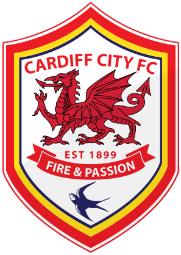

If only goals by English players counted, Liverpool would still be top of EPL
John's final project for the Data Journalism class.
| # | Team | Games Played | Wins | Draws | Losses | Goals Scored | Points |
|---|---|---|---|---|---|---|---|
| 1 | 35 | 25 | 5 | 5 | 96 | 80 | |
| 2 | 35 | 23 | 6 | 6 | 67 | 75 | |
| 3 | 34 | 23 | 5 | 6 | 91 | 74 | |
| 4 | 35 | 21 | 7 | 7 | 62 | 70 | |
| 5 | 35 | 20 | 9 | 6 | 57 | 69 | |
| 6 | 35 | 19 | 6 | 10 | 51 | 63 | |
| 7 | 34 | 17 | 6 | 11 | 56 | 57 | |
| 8 | 35 | 13 | 10 | 12 | 50 | 49 | |
| 9 | 35 | 14 | 4 | 17 | 39 | 46 | |
| 10 | 35 | 11 | 11 | 13 | 39 | 44 | |
| 11 | 35 | 13 | 4 | 18 | 28 | 43 | |
| 12 | 35 | 10 | 7 | 18 | 38 | 37 | |
| 13 | 35 | 9 | 9 | 17 | 47 | 36 | |
| 14 | 34 | 10 | 6 | 18 | 34 | 36 | |
| 15 | 34 | 9 | 8 | 17 | 35 | 35 | |
| 16 | 34 | 6 | 15 | 13 | 41 | 33 | |
| 17 | 35 | 8 | 8 | 19 | 28 | 32 | |
| 18 | 35 | 9 | 3 | 23 | 35 | 30 | |
| 19 |  Cardiff City | 35 | 7 | 9 | 19 | 31 | 30 |
| 20 | 34 | 7 | 8 | 19 | 33 | 29 |
| # | Team | Games Played | Wins | Draws | Losses | Goals Scored | Points |
|---|---|---|---|---|---|---|---|
| 1 | 35 | 22 | 12 | 1 | 48 | 78 | |
| 2 | 35 | 18 | 12 | 5 | 36 | 66 | |
| 3 | 34 | 16 | 11 | 7 | 32 | 59 | |
| 4 | 35 | 13 | 18 | 4 | 18 | 57 | |
| 5 | 35 | 11 | 17 | 7 | 27 | 50 | |
| 6 | Cardiff City ↑ 13 | 35 | 11 | 15 | 9 | 22 | 48 |
| 7 | 35 | 11 | 13 | 11 | 18 | 46 | |
| 8 | 34 | 9 | 16 | 9 | 18 | 43 | |
| 9 | 34 | 8 | 19 | 7 | 15 | 43 | |
| 10 | 35 | 7 | 22 | 6 | 10 | 43 | |
| 11 | 35 | 8 | 16 | 11 | 15 | 40 | |
| 12 | 35 | 6 | 22 | 7 | 14 | 40 | |
| 13 | 35 | 6 | 22 | 7 | 10 | 40 | |
| 14 | 35 | 8 | 13 | 14 | 15 | 37 | |
| 15 | 35 | 6 | 17 | 12 | 15 | 35 | |
| 16 | 35 | 4 | 22 | 9 | 7 | 34 | |
| 17 | 34 | 5 | 16 | 13 | 9 | 31 | |
| 18 | 34 | 1 | 26 | 7 | 4 | 29 | |
| 19 | 35 | 1 | 23 | 11 | 1 | 26 | |
| 20 | 34 | 3 | 14 | 17 | 6 | 23 |
Shuffle the cards
All 20 clubs' (huge) rise and fall under this unjustifiable new rule.

Daniel Sturridge (LIV): 21 goals
Steven Gerrard (LIV): 13 goals
Raheem Sterling (LIV): 9 goals
Liverpool remain their dominance on the Premier League thanks to the 43 goals of in-form Daniel Sturridge, Steven Gerrard and Raheem Sterling. The Reds have a staggering 12 point lead on the chasing pack.
Jay Rodriguez (SOU): 17 goals
Rickie Lambert (SOU): 13 goals
Adam Lallana (SOU): 10 goals
Other teams who do well are Southampton, Cardiff City and Sunderland. The outstanding performance by the English attacking trio at Southampton (Jay Rodriguez, Rickie Lambert and Adam Lallana) secures them a second place on the table, defeating Premier League giant Manchester United who also have world-class English strikers like Wayne Rooney (17 goals).
Manchester City: 87 goals by foreign players | 4 goals by English players
Newcastle United: 38 goals by foreign players | 1 goal by English players
The biggest losers are unsurprisingly Manchester City and Newcastle. Among both teams only one English player (Joe Hart) made more than 15 apperances in the Premier League match starting squad. However, the fact that the Sky Blues drop 15 places to the delegation zone is still flabbergasting.
Ouch, lions
How differently are the 20 clubs dependent on English players to score?

It has been 14 years since an English player won the top scorer race in the Premier League. It has been 24 years since the England national football team made to the semi-final of the World Cup. Yet, due to the remarkable performance by international talents like Luis Suárez (31 goals), Yaya Touré (20 goals) and Sergio Agüero (17 goals), the English Premier League is still the world's most watched football league with an annual broadcast income of £1.2 billion.
It is quite obvious that clubs such as Cardiff City, Sunderland and Norwich City that are struggling at the bottom of the table either have a large number of English players on team or rely heavily on English players to score, while there is a very rare chance to see some of the enormously wealthy clubs like Manchester City have English players in club's starting 11 squad.
However, Liverpool's remarkable performance and Brendan Rodgers' trust on young English talents (Daniel Sturridge, Raheem Sterling and Jordan Henderson) this season are a perfect example that several top English players would still survive, or even thrive in a title race. Especially when Manchester City face a fine of €60m (£49m) from Uefa for their losses of £149 million the 2011-12 and 2012-13 seasons after buying Sergio Agüero, Samir Nasri, Gaël Clichy, Javi Garcia and Matija Nastasic, Liverpool's success with homegrown talents can be something replicable for others.